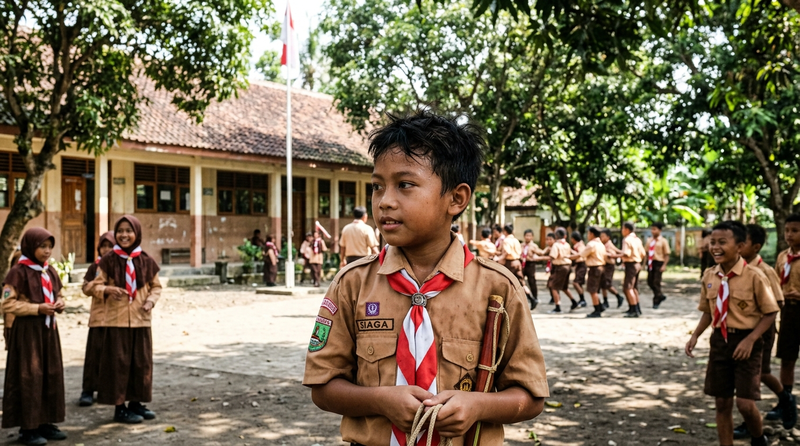
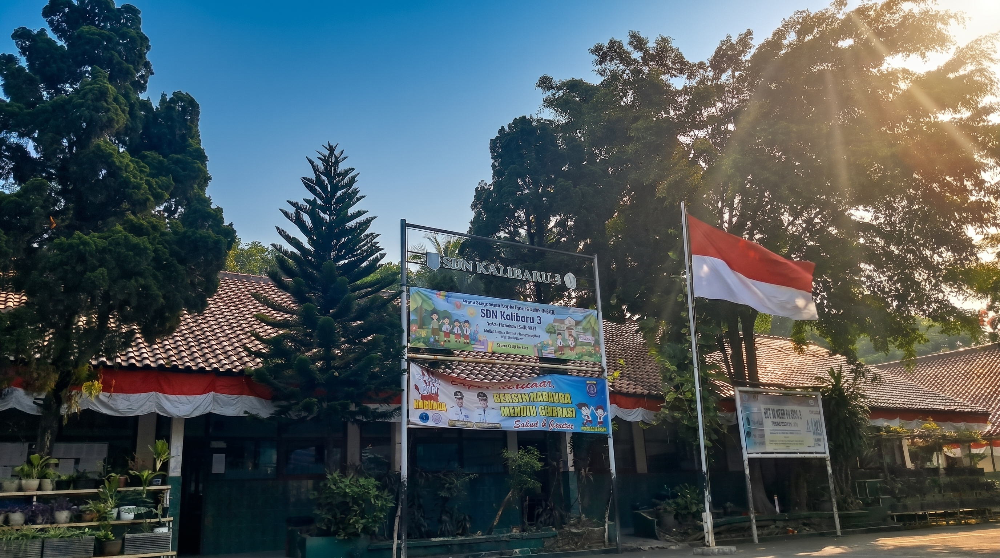
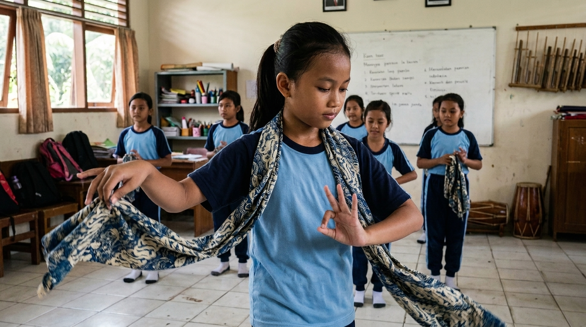

Foto kegiatanPramuka
Pramuka
WajibMelalui kegiatan kepramukaan, peserta didik mengembangkan kemandirian, kedisiplinan, tanggung jawab, kerja sama, kepemimpinan, serta berbagai keterampilan yang berguna dalam kehidupan sehari-hari.

Selamat Datang di
Website Sekolah Resmi
Ruang informasi, komunikasi, dan layanan digital sekolah.

SDN Kalibaru 3 Depok berkomitmen memberikan layanan pendidikan yang aman, inklusif, berkarakter, dan berorientasi pada perkembangan peserta didik.
Lihat profil sekolah →Informasi utama satuan pendidikan.
Temukan pengumuman, agenda dan kegiatan, dokumen, serta galeri kegiatan sekolah dalam satu halaman.
Informasi penting dan pengumuman terbaru dari sekolah.
Jadwal dan kegiatan sekolah.
Dokumen sekolah yang dapat diakses dan diunduh.
Beragam kegiatan memberikan kesempatan kepada peserta didik untuk mengembangkan minat, bakat, keterampilan, dan karakter.

Melalui kegiatan kepramukaan, peserta didik mengembangkan kemandirian, kedisiplinan, tanggung jawab, kerja sama, kepemimpinan, serta berbagai keterampilan yang berguna dalam kehidupan sehari-hari.

Kegiatan tari menjadi ruang bagi peserta didik untuk mengembangkan kreativitas, ekspresi, kepercayaan diri, kepekaan terhadap irama, serta apresiasi terhadap seni dan budaya.
Prestasi peserta didik dan sekolah menjadi bagian dari perjalanan untuk terus belajar, berkembang, dan memberikan yang terbaik.
Memuat prestasi...
Akses berbagai layanan dan sumber belajar yang disediakan untuk mendukung aktivitas warga sekolah.
Memuat layanan...
Ringkasan data sekolah diperbarui berdasarkan tahun pelajaran aktif.
Tahun Pelajaran Aktif
Jumlah Rombel
Guru & Tendik
Peserta Didik
Pendidikan bukan hanya tentang apa yang dipelajari hari ini, tetapi tentang bagaimana kita mempersiapkan generasi untuk masa depan.
SDN Kalibaru 3 DepokInformasi kontak dan ruang komunikasi sekolah.
Jam layanan sekolah
Punya pertanyaan, kritik, saran, atau masukan untuk sekolah? Sampaikan melalui ruang komunikasi kami.
Kirim Pesan →Website resmi ini menjadi ruang informasi, komunikasi, dan layanan digital sekolah bagi peserta didik, orang tua, guru, tenaga kependidikan, dan masyarakat.